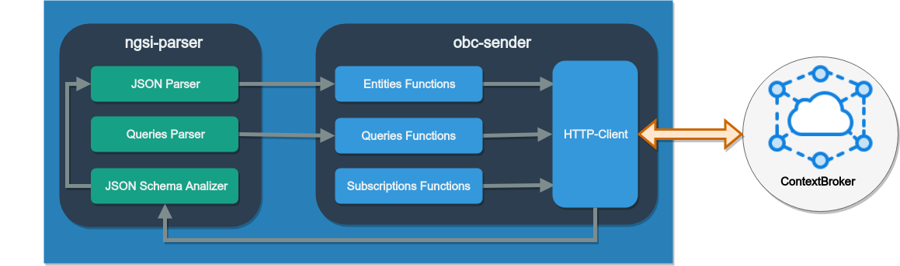

Welcome to NGSI Library JavaScript.
The NGSI library for JavaScript is a software tool with the aim of transforming JSON entities to NGSI data models, which can be manipulated or operated by the FIWARE Orion Context Broker. This library can be implemented in applications through RESTFul web services or backend, with the NodeJS execution environment; and also this library can be used in the development of mobile applications with frameworks that use JavaScript as a language to develop of Android or IOS native applications, such as React Native o Native Script.
The NGSI library is a client of the Orion Context Broker that implement functionalities for the analysis of the JSON objects to determine the match with a data model, and also, functionalities to transform JSON objects to a NGSI v2 entities.
The NGSI Library is composed of two npm modules:
NGSI-parser module
NGSI-parser module analyzes the syntax of non-structured JSON objects to transform them into FIWARE-NGSIv context entities.
OCB-sender module
OCB-sender module is an Orion ContextBroker's client. This client manipulates the context information of FIWARE-NGSIv2 context entities, with the aim of send the NGSI context entities updates to the Orion Context Broker and, in this way make operations with them.
How it works the NGSI library
The architecture of the NGSI library is composed by two modules npm: ngsi-parser and ocb-sender. These modules can be imported in only one JavaScript project. Figure shows the modules ngsi-parser and ocb-sender of the architecture of the library.

ngsi-parser module
The ngsi-parser module has the objective of analyzing and converting the syntax of a non-structured JSON object or attribute to transform it in a NGSI entity context. Additionally, this module provides the functionality to verify if the entity fulfills with the standard specification of a FIWARE data model. The library verifies if the original JSON structure match with the corresponding FIWARE data model. These data model can be located in the repository “dataModels” of the account Github of the SmartSDK proyect.
The ngsi-parser contains three basic elements to perform the analysis of the JSON objects: a) the JSON Parser includes the function needed for the analysis and transformation of a non structured JSON object to one that fulfill with the NGSI standard. b) the Queries Parser is the responsible element to interpret JSON objects to produce context queries to obtain specific data from the Orion Context Broker, and finally, c) the Data JSON Schema Analyzer is the responsible to determine if a JSON object fulfill or not fulfill with a data models and also it generates the list of errors in the match between the JSON schema and the data models.
ocb-sender module
The module ocb-sender has the main objective of manipulating the context information of NGSI context entities and/or FIWARE data models, in order to send this information to one instance of the Orion Context Broker. The ocb-senser module is composed by four elements: first three elements are used to encapsulate the functionalities of the client of the Orion Context Broker: a) the Entities Functions implements the functions to manipulate the entities of the Orion Context Broker, b) the Queries Functions considers the functions for personalized queries to the Orion Context Broker, b) Subscriptions Functions implement the functions to manipulate the subscriptions of the Orion Context Broker, d) the HTTP-Client is the responsible for the connection of the Orion Context Broker, this component is also used for the ngsi-parser to obtain JSON schemas for a repository.
Pre-requirements of Installation
In order to use both npm modules of NGSI JS LIbrary its necessary cover the next requirements.
Node.js and npm
The installation of Node.js is done through an executable installer or by downloading the source code, this depends directly on the operating system in which it is installed. On the official page of Node.js you can find the download files and the steps to follow for their installation, the official download link is the following: https://nodejs.org/en/download/
The current version of Node.js is 8.10.0, this version includes npm in its version 5.6.0.
The installation of both modules of the NGSI Javascript library requires the previous installation of the following versions.
- node.js >= 8.x.x (in version 8.10.0 or higher)
- npm >= 5.x.x (in version 5.0.0 or higher)
To verify the current version of Node and npm, execute the following commands in console:
- node -v
- npm -v